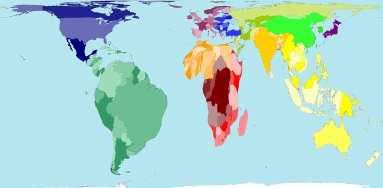

Distorting maps to display other information
Maps can be similarly distorted to make the areas of countries (or regions)
proportional to many other measurements.
Map areas must represent a quantity that is 'part of a whole'. If two areas
are combined, the value for the combined area should be the sum of their values.
For example, area should not be proportional to infant mortality rate in the
countries — this would give unreasonable emphasis to very small countries. A
better measurement to use for the map areas of countries would be the total number
of infants dying.
WorldMapper
It is far from simple to construct such distorted maps, but software has been
written to automatically produce them. The following maps were all drawn by WorldMapper.
Although the resulting maps occasionally produce spidery distortions, the result
is often excellent.
Rainfall volume
The map below shows where the world's rainfall occurs. Observe in particular
the high rainfall in Brazil and Indonesia.

Electricity generation
The next map shows where the world's electricity is generated. The distortion
of the shapes of countries in Africa is particularly severe.